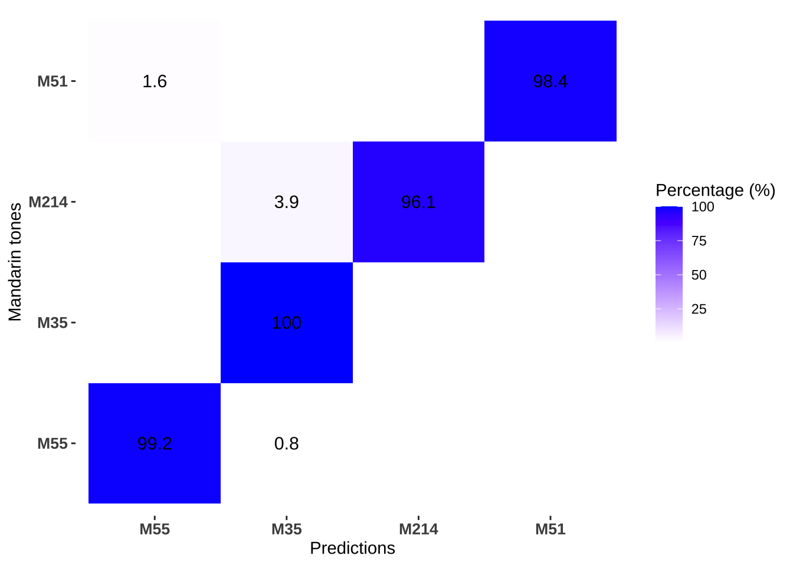
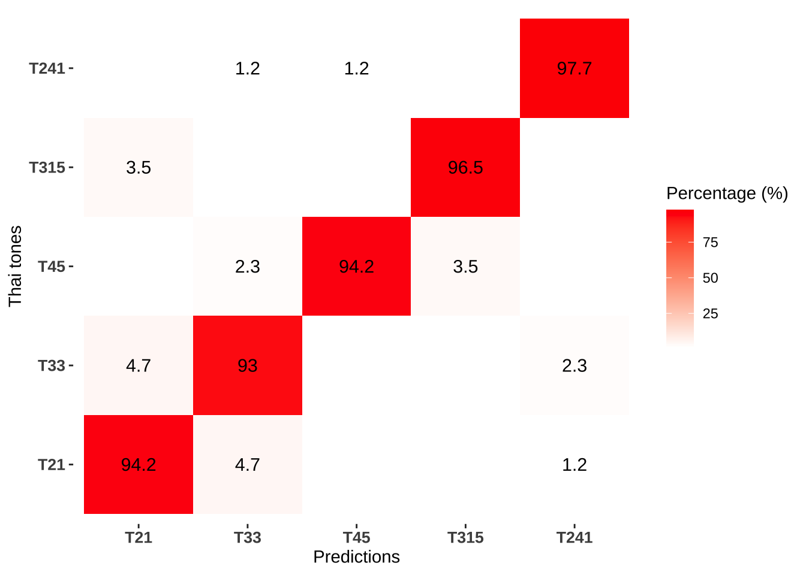
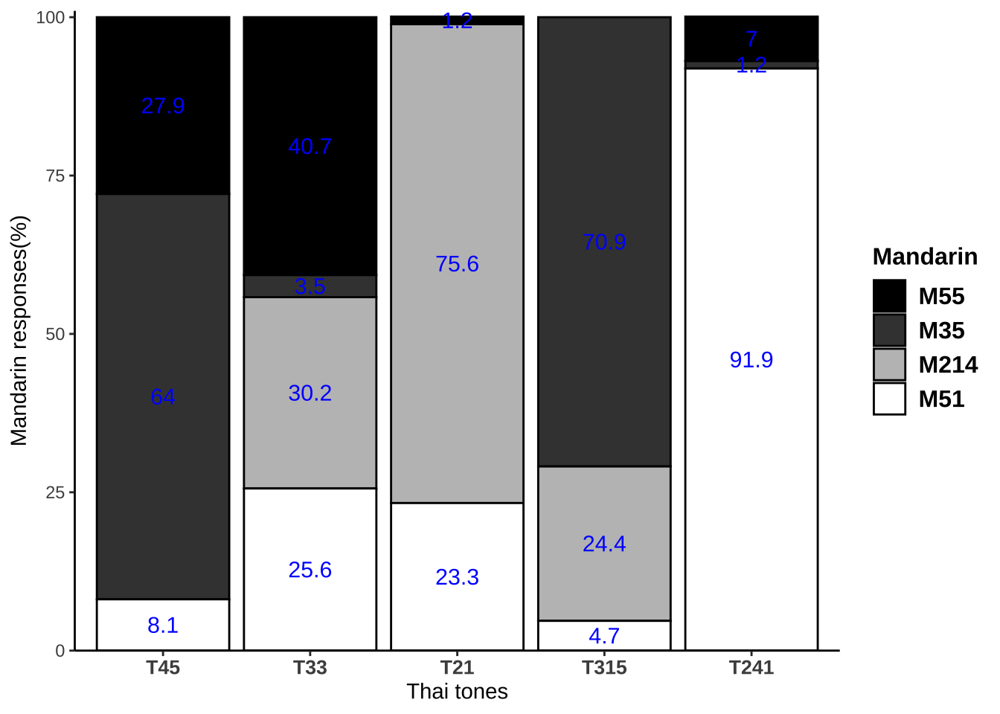
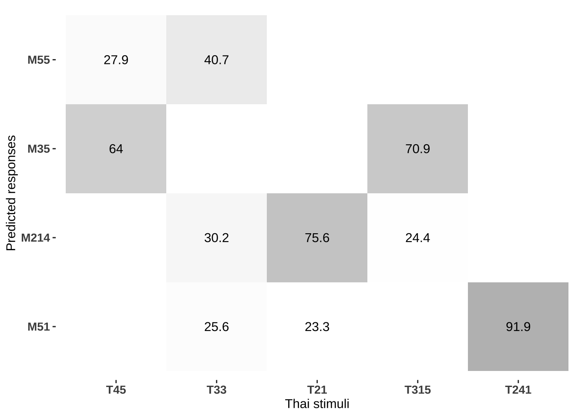
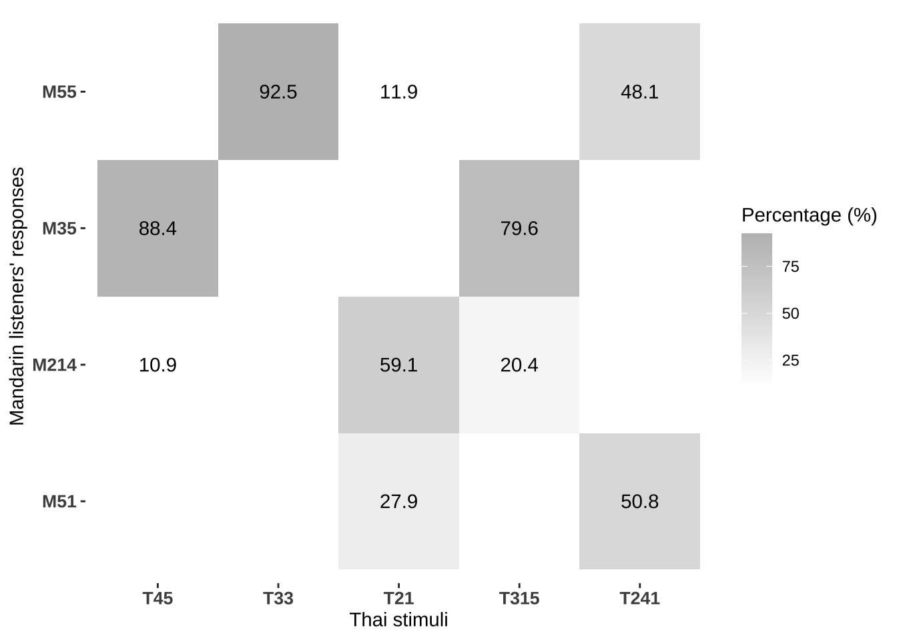
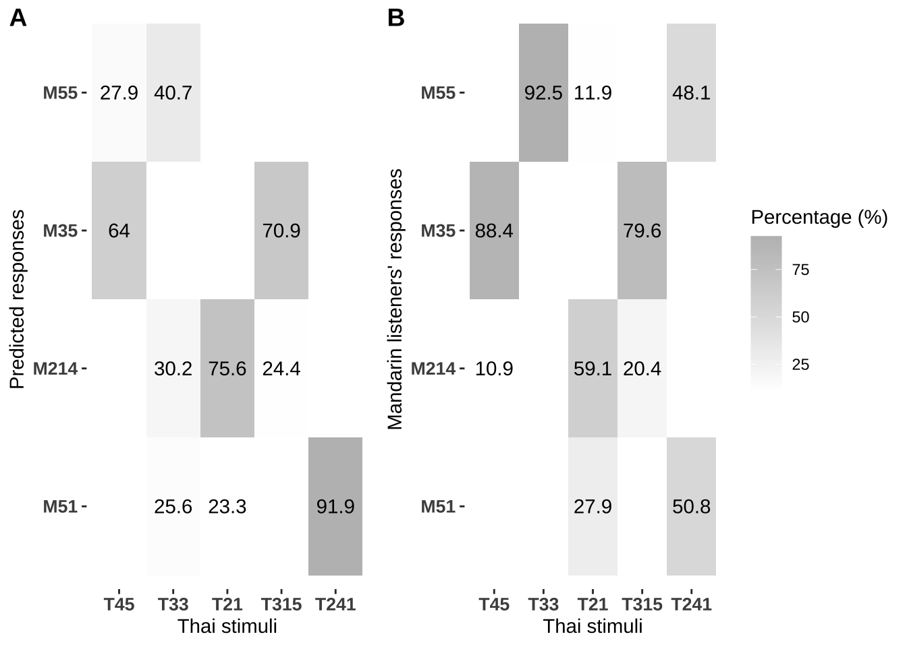
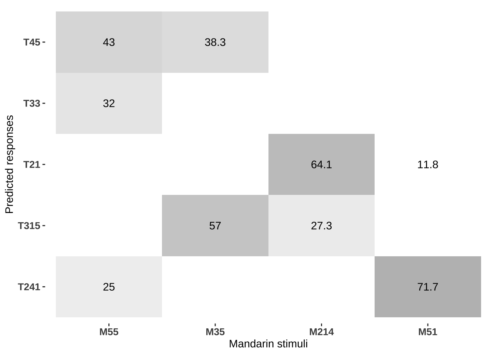
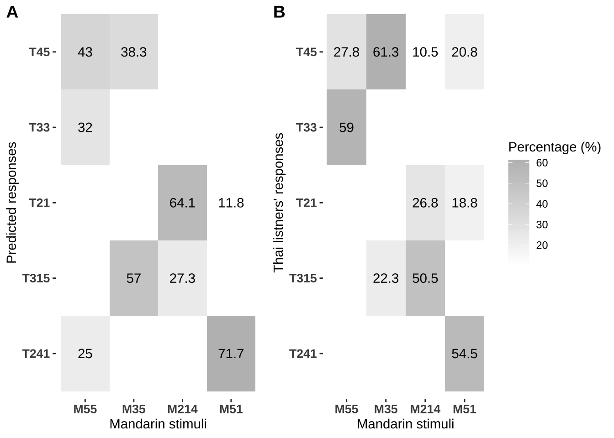

Chapter 13 第十三章 机器学习项目案例

详细背景请看原文献
13.1 训练普通话声调模型
# import data
md_discrete = read.csv("data/ch13/md_discrete.csv")
# Selecting features
dataset_md = md_discrete[ , c(3, 4:9)]
# scale the data
dataset_md[,-1] = scale(dataset_md[-1])
dataset_md$tone = as.factor(dataset_md$tone)
# Fitting classifier
# model based on discrete features
svm_md = svm(formula = tone ~ .,
data = dataset_md,
type = 'C-classification',#regression or classification
kernel = 'radial',
cost = "2",
cross = 10)
# total accuracy
# summary(svm_md)
svm_md$tot.accuracy## [1] 96.67319# # model based on contour features
# svm_contour = svm(formula = tone ~ .,
# data = dataset_thai_8point,
# type = 'C-classification',#regression or classification
# kernel = 'radial',
# cost = "2",
# cross = 10)
# svm_contour$tot.accuracy# producing confusion matrix
prediction_md <- predict(svm_md, dataset_md)
md_confusion = data.frame(pred = prediction_md, tone = md_discrete$tone)
md_confusion_table = md_confusion%>%
group_by(tone,pred)%>%
summarize(n = n())%>%
group_by(tone)%>%
mutate(sum = sum(n),
percent = round((n/sum)*100,2))%>%
select(tone,pred,percent)%>%
spread(tone, percent)## `summarise()` has grouped output by 'tone'. You can override using the `.groups` argument.## # A tibble: 4 × 5
## pred M214 M35 M51 M55
## <fct> <dbl> <dbl> <dbl> <dbl>
## 1 M214 96.1 NA NA NA
## 2 M35 3.91 100 NA 0.78
## 3 M51 NA NA 98.4 NA
## 4 M55 NA NA 1.57 99.2# write.csv(md_confusion_table,
# file ="data/processed/md_confusion_table.csv",
# row.names = FALSE)
md_plot = md_confusion%>%
group_by(pred, tone)%>%
summarise(n = n())%>%
group_by(tone)%>%
mutate(percent = n/sum(n),
sum = sum(n))%>%
ggplot(aes(pred, tone))+
geom_tile(aes(fill = percent*100 ))+
geom_text(aes(label = round(percent*100, 1)), size = 4) +
scale_x_discrete(name = "Predictions",
limits=c("M55","M35","M214","M51"),
labels=c("M55","M35","M214","M51"))+
scale_y_discrete(name = "Mandarin tones",
limits=c("M55","M35","M214","M51"),
labels=c("M55","M35","M214","M51"))+
scale_fill_gradient(name="Percentage (%)",
low = "white", high = "blue") +
theme(axis.text.x = element_text(face="bold",
size=10),
axis.text.y = element_text(face="bold",
size=10),
panel.background = element_blank())## `summarise()` has grouped output by 'pred'. You can override using the `.groups` argument.
13.2 训练泰语母语者声调模型
# import data
thai_discrete = read.csv("data/ch13/thai_discrete.csv")
# Selecting features
dataset_thai = thai_discrete[ , c(2, 6:11)]
# scale the data
dataset_thai[,-1] = scale(dataset_thai[-1])
# Fitting classifier
# model based on discrete features
svm_thai = svm(formula = tone ~ .,
data = dataset_thai,
type = 'C-classification',#regression or classification
kernel = 'radial',
cost = "2",
cross = 10)
# total accuracy
# summary(svm_thai)
svm_thai$tot.accuracy## [1] 91.16279检测泰语母语者声调模型的正确率。
# confusion matrix
prediction <- predict(svm_thai, dataset_thai)
thai_confusion = data.frame(pred = prediction, tone = thai_discrete$tone)
thai_confusion_table = thai_confusion%>%
group_by(tone,pred)%>%
summarize(n = n())%>%
group_by(tone)%>%
mutate(sum = sum(n),
percent = round((n/sum)*100,2))%>%
select(tone,pred,percent)%>%
spread(tone, percent)## `summarise()` has grouped output by 'tone'. You can override using the `.groups` argument.thai_confusion$tone = as.factor(thai_confusion$tone)
# write.csv(thai_confusion_table,
# file = "data/processed/thai_confusion_table ",
# row.names = FALSE)
thai_plot = thai_confusion%>%
group_by(pred, tone)%>%
summarise(n = n())%>%
group_by(tone)%>%
mutate(percent = n/sum(n),
sum = sum(n))%>%
ggplot(aes(pred, tone))+
geom_tile(aes(fill = percent*100 ))+
geom_text(aes(label = round(percent*100, 1)), size = 4)+
scale_x_discrete(name = "Predictions",
limits=c("21","33","45","315","241"),
labels=c("T21", "T33", "T45","T315","T241"))+
scale_y_discrete(name = "Thai tones",
limits=c("21","33","45","315","241"),
labels=c("T21", "T33", "T45","T315","T241"))+
scale_fill_gradient(name="Percentage (%)",
low = "white", high = "red") +
theme(axis.text.x = element_text(face="bold",
size=10),
axis.text.y = element_text(face="bold",
size=10),
panel.background = element_blank())## `summarise()` has grouped output by 'pred'. You can override using the `.groups` argument.
13.3 模拟普通话听者感知泰语声调
# mandarin listeners percieve Thai tones
prediction_md_thai <- predict(svm_md, dataset_thai)
table( prediction_md_thai, thai_discrete$tone)##
## prediction_md_thai 21 33 45 241 315
## M214 65 26 0 0 21
## M35 0 3 55 1 61
## M51 20 22 7 79 4
## M55 1 35 24 6 0# SVM assimilation table
md.svm.assim = data.frame(pred = prediction_md_thai,
tone = thai_discrete$tone)%>%
group_by(pred, tone)%>%
summarise(n = n())%>%
group_by(tone)%>%
mutate(percent = round((n/sum(n)),3)*100,
sum = sum(n))## `summarise()` has grouped output by 'pred'. You can override using the `.groups` argument.md.svm.assim$pred = factor(md.svm.assim$pred, c("M55","M35","M214","M51"))
md.svm.assim$tone = factor(md.svm.assim$tone,c("45","33","21","315","241"))
# Stacked barplot
md.svm.assim.stacked = ggplot(md.svm.assim,
aes(fill=pred, y=percent, x=tone, label = percent)) +
geom_bar( stat="identity")+
scale_fill_manual(
values=c("M55" = "black", "M35"="gray25",
"M214"="gray75", "M51"="white"),
name="Mandarin",
breaks=c("M55", "M35", "M214","M51"),
labels=c("M55", "M35", "M214","M51"))+
geom_bar(colour="black", stat="identity")+
xlab("Thai tones")+
ylab("Mandarin responses(%)") +
scale_y_continuous(expand = c(0, 0), limits = c(0, 101))+
theme_classic()+
theme(legend.title = element_text(size=12, face="bold"))+
theme(legend.text = element_text(size = 12, face = "bold"))+
theme(axis.text.x = element_text(face="bold", size=10))+
scale_x_discrete(breaks = c("45", "33", "21","315","241"),
labels=c("T45", "T33", "T21","T315","T241"))+
geom_text(size = 4, position = position_stack(vjust = 0.5),color="blue")
md.svm.assim.stacked 
# png("figure/md.svm.assim.stacked .png",
# units="in", width=5, height=4, res=600)
# md.svm.assim.stacked
# dev.off()
# heat map
md.svm.assim.heat = md.svm.assim%>%
filter(percent>10)%>%
ggplot(aes(tone, pred))+
geom_tile(aes(fill = percent ))+
geom_text(aes(label = percent)) +
scale_x_discrete(name = "Thai stimuli",
limits=c("45","33","21","315","241"),
labels=c("T45","T33","T21","T315","T241"))+
scale_y_discrete(name = "Predicted responses",
limits=c("M51","M214","M35","M55"),
labels=c("M51","M214","M35","M55"))+
scale_fill_gradient(name="Percentage (%)",
low = "white", high = "gray") +
theme(axis.text.x = element_text(face="bold",
size=10),
axis.text.y = element_text(face="bold",
size=10),
panel.background = element_blank())+
theme(legend.position="none")
md.svm.assim.heat
final.cm = read.csv(file = "data/ch13/final.cm.csv")
final.cm$stimuli = as.factor(final.cm$stimuli)
md.human.assim.heat = final.cm%>%
group_by(stimuli, response)%>%
filter(subject !="106")%>%
summarise(cat.mean = round ((sum(percentage)/12)*100, 1))%>%
filter(cat.mean >10)%>%
ggplot(aes(stimuli, response))+
geom_tile(aes(fill = cat.mean ))+
geom_text(aes(label = cat.mean)) +
scale_x_discrete(name = "Thai stimuli",
limits=c("45","33","21","315","241"),
labels=c("T45","T33","T21","T315","T241"))+
scale_y_discrete(name = "Mandarin listeners' responses",
limits=c("M51","M214","M35","M55"),
labels=c("M51","M214","M35","M55"))+
scale_fill_gradient(name="Percentage (%)",
low = "white", high = "gray") +
theme(axis.text.x = element_text(face="bold",
size=10),
axis.text.y = element_text(face="bold",
size=10),
panel.background = element_blank())## `summarise()` has grouped output by 'stimuli'. You can override using the `.groups` argument.
md_compare = plot_grid(md.svm.assim.heat, md.human.assim.heat,
nrow=1, labels=c('A', 'B'),
rel_widths = c(1, 1.4)
) #Or labels="AUTO"
md_compare
13.4 模拟泰语母语听者感知普通话声调
# thai listeners percieve mandarin tones
prediction_thai_md <- predict(svm_thai, dataset_md)
table(prediction_thai_md, md_discrete$tone)##
## prediction_thai_md M214 M35 M51 M55
## 21 82 0 15 0
## 33 6 2 7 41
## 45 0 49 8 55
## 241 5 4 91 32
## 315 35 73 6 0# set the order of thai tones
thai.svm.assim = data.frame(pred = prediction_thai_md,
tone = md_discrete$tone)%>%
group_by(pred, tone)%>%
summarise(n = n())%>%
group_by(tone)%>%
mutate(percent = round((n/sum(n)),3)*100,
sum = sum(n))## `summarise()` has grouped output by 'pred'. You can override using the `.groups` argument.thai.svm.assim$tone = factor(thai.svm.assim$tone,
c("M55","M35","M214","M51"))
thai.svm.assim$pred = factor(thai.svm.assim$pred,
c("45","33","21","315","241"))
thai.svm.assim.stacked = ggplot(thai.svm.assim,
aes(fill=pred, y=percent, x=tone, label = percent)) +
geom_bar( stat="identity")+
scale_fill_manual(
values=c("45" = "black", "33"="gray25", "21"="gray50",
"315"="gray75", "241"="white"),
name="Thai",
breaks=c("45", "33", "21","315","241"),
labels=c("T45", "T33", "T21","T315","T241"))+
geom_bar(colour="black", stat="identity")+
xlab("Mandarin tones")+
ylab("Thai responses(%)") +
scale_y_continuous(expand = c(0, 0), limits = c(0, 100))+
theme_classic()+
theme(legend.title = element_text(size=12, face="bold"))+
theme(legend.text = element_text(size = 12, face = "bold"))+
theme(axis.text.x = element_text(face="bold", size=10))+
scale_x_discrete(breaks = c("M55", "M35", "M214","M51"),
labels=c("M55", "M35", "M214","M51"))+
geom_text(size = 4, position = position_stack(vjust = 0.5),color="blue")
# Print this our for publication
# png("figure3.png", units="in", width=5, height=4, res=600)
# figure3
# dev.off()
# svm predictions
thai.svm.assim.heat = thai.svm.assim%>%
filter(percent>10)%>%
ggplot(aes(tone, pred))+
geom_tile(aes(fill = percent ))+
geom_text(aes(label = percent))+
scale_fill_gradient(name="Percentage (%)",
low = "white", high = "gray")+
theme(axis.text.x = element_text(face="bold",
size=10),
axis.text.y = element_text(face="bold",
size=10),
panel.background = element_blank())+
scale_x_discrete(name = "Mandarin stimuli",
breaks = c("M55", "M35", "M214","M51"),
labels=c("M55", "M35", "M214","M51"))+
scale_y_discrete(name = "Predicted responses",
limits=c("241","315","21","33","45"),
labels=c("T241", "T315", "T21","T33","T45"))+
theme(legend.position="none")
thai.svm.assim.heat 
## Rows: 20 Columns: 3
## ── Column specification ────────────────────────────────────────────────────────────────────────────────────────────
## Delimiter: ","
## chr (1): tone
## dbl (2): pred, percent
##
## ℹ Use `spec()` to retrieve the full column specification for this data.
## ℹ Specify the column types or set `show_col_types = FALSE` to quiet this message.thai_assm$pred = as.character(thai_assm$pred)
thai_assm$tone = factor(thai_assm$tone, c("M55","M35","M214","M51"))
thai_assm$pred = factor(thai_assm$pred,c("45","33","21","315","241"))
thai.human.assim.heat = thai_assm%>%
filter(percent>10)%>%
ggplot(aes(tone, pred))+
geom_tile(aes(fill = percent ))+
geom_text(aes(label = percent))+
scale_fill_gradient(name="Percentage (%)",
low = "white", high = "gray")+
theme(axis.text.x = element_text(face="bold",
size=10),
axis.text.y = element_text(face="bold",
size=10),
panel.background = element_blank())+
scale_x_discrete(name = "Mandarin stimuli",
breaks = c("M55", "M35", "M214","M51"),
labels=c("M55", "M35", "M214","M51"))+
scale_y_discrete(name = "Thai listners' responses",
limits=c("241","315","21","33","45"),
labels=c("T241", "T315", "T21","T33","T45"))
thai_compare = plot_grid(thai.svm.assim.heat , thai.human.assim.heat,
nrow=1, labels=c('A', 'B'),
rel_widths = c(1, 1.3))
thai_compare
## quartz_off_screen
## 2